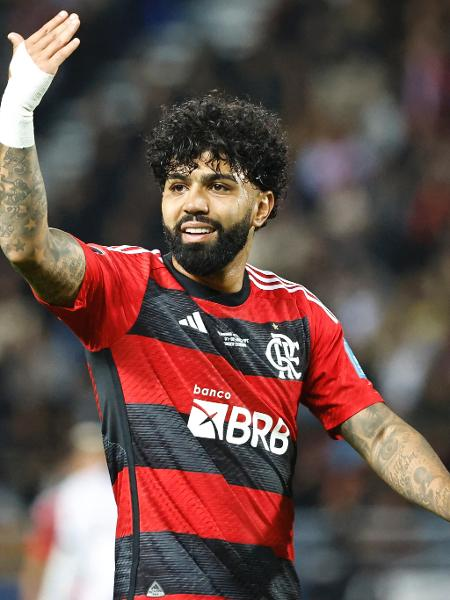
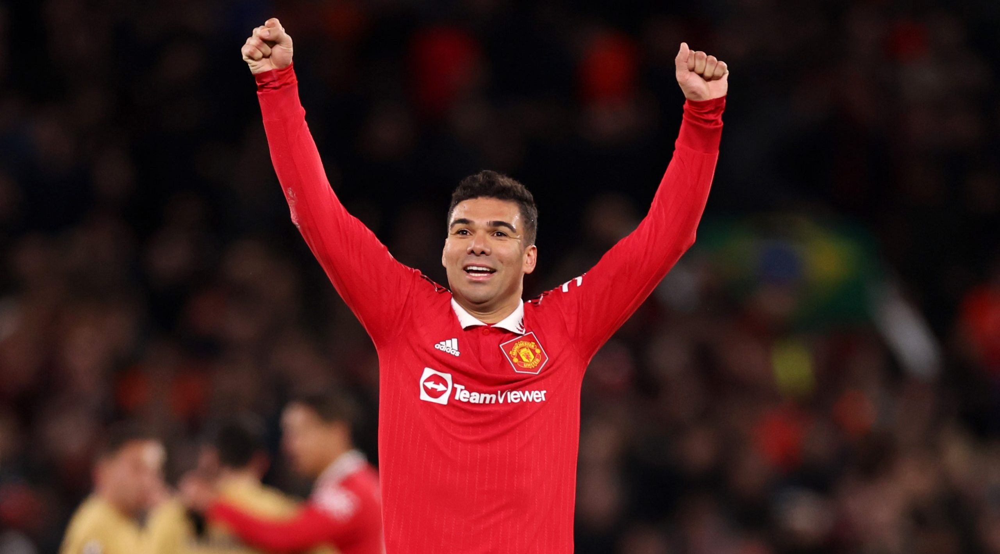
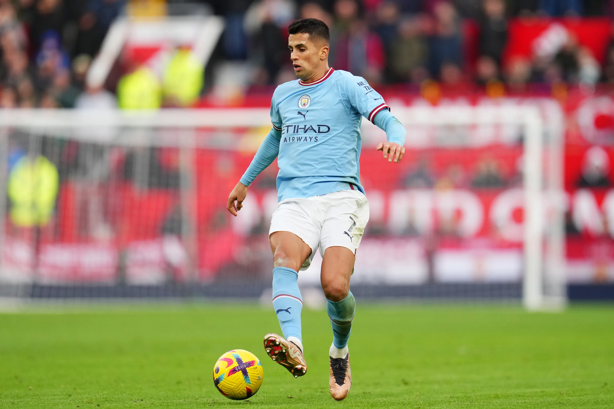

As novas contratações do Corinthians!!!! Veja agora
Jogos do Corinthians no brasileirão 2023!
Corinthians x Cruzeiro
Goias x Corinthians
Palmeiras x Corinthians
Corinthians x Fortaleza
Botafogo x Corinthians
Corinthians x São Paulo
Flamengo x Corinthians
Corinthians x Fluminense
America MG x Corinthians
Corinthians x Cuiaba
Santos x Corinthians
Athletico PR x Corinthians
CORINTHIANS X RED BULL BRAGANTINO
ATLÉTICO-MG X CORINTHIANS
CORINTHIANS X GRÊMIO
CORINTHIANS X VASCO DA GAMA
INTERNACIONAL X CORINTHIANS
CORINTHIANS X CORITIBA

 